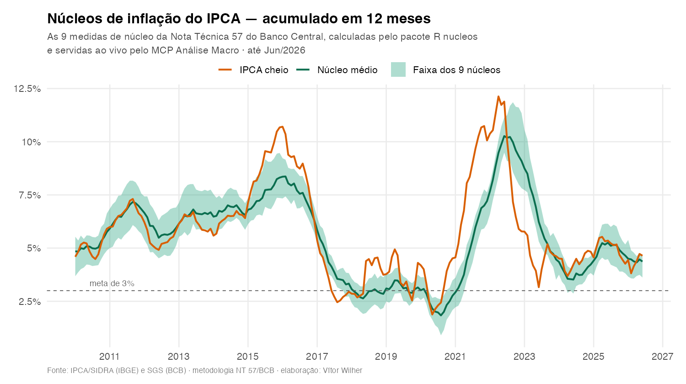

flowchart LR
subgraph Calculo["Camada de cálculo — pacote R nucleos"]
SIDRA[(SIDRA/IBGE<br>5 estruturas do IPCA)] --> PKG["get_ipca() · agregar()<br>core_ma/ms/dp/p55() · difusao()"]
PKG --> TEST{{"testthat<br>conformidade vs. SGS"}}
end
subgraph CI["GitHub Actions — mensal"]
TEST --> GERA["dashboard/gerar_dados.R"]
GERA --> REL[("release dashboard-dados<br>series_nucleos.json")]
end
subgraph Worker["MCP — Cloudflare Workers (TypeScript)"]
REL -->|"fetch + cache 6h"| MCP["nucleos-mcp<br>Streamable HTTP · authless"]
FB[(src/data.json<br>fallback embutido)] -.->|"se o fetch falhar"| MCP
MCP --> TOOLS["nucleos_listar · nucleos_metadata<br>nucleos_ultimas · nucleos_serie<br>nucleos_comparar"]
end
TOOLS --> CLIENTES(["Claude · Claude Code<br>Cursor · Codex"])MCP Análise Macro — os núcleos de inflação do IPCA dentro do Claude
R
MCP
Model Context Protocol
TypeScript
Cloudflare Workers
Agentes de IA
Pacote R
IPCA
Núcleos de Inflação
Banco Central
Macroeconomia
SIDRA
SGS
Reprodutibilidade
GitHub Actions
O primeiro MCP da Análise Macro: um servidor remoto e sem autenticação que coloca as 23 séries analíticas do IPCA — os 9 núcleos de inflação da Nota Técnica 57 do BCB, difusão e agregações por segmento — dentro do Claude, Cursor e Codex. A camada de cálculo é o pacote R
nucleos, que reproduz o SGS até a 2ª casa decimal; o servidor é fino, roda em Cloudflare Workers e se atualiza sozinho todo mês, sem re-deploy.

nucleos e servidos ao vivo pelo MCP
TipExperimente agora
O servidor está no ar, é público e gratuito. Cole esta URL como conector personalizado no Claude (Configurações → Connectors) e pergunte “os núcleos do IPCA estão desacelerando?”:
https://nucleos-mcp.analisemacro.workers.dev/mcpGuia passo a passo, escrito para quem não é desenvolvedor: Conectar com IA.
Visão Geral
Este projeto tem duas camadas que resolvem problemas diferentes:
nucleos— um pacote R que calcula, de forma reprodutível, as 22 séries analíticas derivadas do IPCA publicadas pelo Banco Central, seguindo a metodologia consolidada da Nota Técnica 57 (dez/2025). Cada série é verificada, em teste automatizado, contra a série oficial do SGS.MCP Análise Macro — o primeiro servidor MCP da casa, que expõe essas séries como ferramentas que um assistente de IA chama sozinho. É o foco desta ficha.
A ordem importa: o MCP só é possível — e só é confiável — porque a camada de cálculo já existia e era auditada. Um servidor que entrega número errado com fluência é pior que servidor nenhum.
Por que um MCP
O Model Context Protocol é o padrão aberto que permite a um assistente de IA chamar ferramentas externas. Na prática, resolve um problema concreto de quem trabalha com dados macroeconômicos: o modelo não sabe o IPCA de junho de 2026 — e, pior, se você perguntar, ele pode inventar um número plausível.
Com o conector instalado, a pergunta “a difusão está subindo?” deixa de ser um exercício de memória do modelo e vira uma consulta ao dado calculado, com fonte e data de referência anexadas na resposta.
NoteO nicho
Levantamento de julho de 2026 sobre MCPs de dados financeiros: os que existem são todos de mercado global/EUA — ações, fundamentos, filings (Financial Datasets, Alpha Vantage, Polygon, Finnhub, FMP, EODHD). Nenhum faz macroeconomia brasileira, e muito menos núcleos de inflação pela metodologia do BCB.
Daí a estratégia de marca: o nome do produto é MCP Análise Macro (guarda-chuva), não “MCP Núcleos”. Nome amplo, entrega estreita — a v1 traz só os núcleos do IPCA, que é o carro-chefe e tem os dados prontos; a expansão para Selic/Copom, câmbio, atividade, fiscal e Focus nasce em infraestrutura própria, módulo a módulo.
Arquitetura
A decisão de projeto mais importante: o servidor não roda R e não coleta o SIDRA. Ele lê um artefato pré-calculado.
Isso mantém o servidor fino: sem runtime R, sem chamada ao SIDRA no caminho crítico (que é lento e paginado), sem estado para administrar. O custo ocioso no Cloudflare fica perto de zero — apropriado para um dado que muda uma vez por mês.
Auto-atualização sem re-deploy
O Worker busca series_nucleos.json no release dashboard-dados em tempo de execução, com cache de 6h por isolate. O workflow mensal regenera esse artefato após a divulgação do IPCA — então o MCP se atualiza sozinho. O src/data.json embutido no bundle existe apenas como fallback: se o GitHub estiver fora do ar, o servidor responde com o snapshot antigo em vez de quebrar.
async function loadData(): Promise<Snapshot> {
const now = Date.now();
if (cache && now - cache.at < TTL_MS) return cache.data;
try {
const res = await fetch(DATA_URL, { cf: { cacheTtl: 3600, cacheEverything: true } });
if (res.ok) {
const data = (await res.json()) as Snapshot;
if (data?.series && data?.metadata) {
cache = { at: now, data };
return data;
}
}
} catch {
// GitHub/rede indisponível — cai no fallback abaixo.
}
// Preserva o último bom; se nunca houve, usa o snapshot embutido no bundle.
if (!cache) cache = { at: now, data: fallback as Snapshot };
return cache.data;
}Sem autenticação, por escolha
O servidor é authless e fala Streamable HTTP — o transporte que Claude, Cursor e Codex suportam nativamente por URL. Ninguém precisa instalar ponte (mcp-remote), colar chave nem fazer login: cola-se a URL e as ferramentas aparecem. Como o servidor só devolve dado público e não acessa arquivo nenhum do usuário, a superfície de risco de dispensar autenticação é mínima — e a fricção de adoção cai a zero, que é o que importa num produto que se quer distribuído para uma rede de alunos e clientes.
As ferramentas
| Tool | O que faz |
|---|---|
nucleos_listar |
Lista as 23 séries disponíveis (núcleos, agregações, difusão, IPCA cheio) |
nucleos_metadata |
Proveniência: última referência, data de atualização, fonte, metodologia |
nucleos_ultimas |
Panorama do mês: variação, aceleração (p.p.) e acumulados 3m/12m |
nucleos_serie |
Série temporal de uma série, por período ou últimos \(N\) meses |
nucleos_comparar |
Confronta várias séries lado a lado |
O snapshot atual cobre 23 séries mensais de 2000-01 a 2026-06: os 9 núcleos (EX0, EX1, EX2, EX3, EX-FE, MA, MS, DP, P55) e mais 14 séries — difusão, IPCA cheio, EX3 Serviços/Industriais e as agregações por segmento (administrados, livres, serviços, bens industriais, comercializáveis, duráveis/semiduráveis/não duráveis, alimentação no domicílio).
O design que separa um MCP bom de um MCP ingênuo
Expor dado cru é a parte fácil. O que dá trabalho é impedir que o modelo use o dado errado — e isso se faz no texto que acompanha as ferramentas.
ImportantTrês armadilhas endereçadas no protocolo
1. A difusão não é uma variação de preço. É a proporção (%) de itens do IPCA com variação positiva no mês — um nível. Acumulá-la como se fosse inflação produz absurdo: três meses a ~60% “acumulariam” ~300%. O servidor detecta a série de nível e reporta a média do período, com nota explícita na resposta:
const ehNivel = (nome: string) => norm(nome) === "difusao";
// Agrega os últimos n meses conforme a natureza da série.
const agregado = (nome: string, v: number[], n: number) =>
ehNivel(nome) ? media(v, n) : acumulado(v, n);2. O snapshot pode estar velho. O IPCA é mensal; se o artefato tem mais de 45 dias, provavelmente houve divulgação do IBGE ainda não refletida. O nucleos_metadata calcula a idade em tempo de execução e emite alerta — em vez de deixar o modelo apresentar dado defasado como se fosse o mais recente.
3. O modelo precisa saber o que ele não sabe. O campo instructions, enviado no handshake, avisa que os dados são um snapshot pré-calculado (não consulta ao vivo), explica a unidade da difusão e indica por qual ferramenta começar.
Há ainda uma camada de tolerância na entrada: resolveSerie() normaliza acento e caixa e aceita abreviação, então "ms", "MS" e "Núcleo MS" chegam todos à mesma série — o modelo não precisa acertar o rótulo canônico de primeira.
A camada de cálculo: o pacote nucleos
O MCP é fino porque o trabalho pesado está no pacote R — e é lá que mora o diferencial técnico.
As cinco estruturas do IPCA
O IPCA teve 5 estruturas (POF) desde 1991, cada uma numa tabela diferente do SIDRA (58/61, 655/656, 2938, 1419, 7060). get_ipca() costura as cinco e devolve o código estrutural do IPCA, não o id interno do SIDRA.
Isso cria uma sutileza que o código precisa respeitar: um mesmo código (ex.: 8101.Cursos) muda de significado entre estruturas. Por isso MS e DP usam proxies de transição e são calculados estrutura a estrutura — montar uma história única por código contaminaria o cálculo.
Conformidade contra o SGS
A validação não é “parece certo”: há uma suíte de testes que compara cada série com a oficial do Banco Central. As 22 séries reproduzem o SGS até a segunda casa decimal de 1999 em diante (o MS é exato desde 1991).
WarningLimitação conhecida, documentada
No período de alta inflação e transição de planos monetários (1991–1995), a API pública do SIDRA não reproduz exatamente as variações usadas pelo BCB, que foram construídas a partir de microdados do IBGE.
A divergência é de fonte de dados, não de método — a evidência é que até agregações simples divergem no período, enquanto o MS, que suaviza itens administrados, permanece exato. Está registrado em ?get_ipca em vez de escondido.
Detalhes de metodologia que a NT 57 mudou
core_ma()apara as duas caudas simetricamente: os itens que atravessam os percentis 20 e 80 entram com peso parcial (etapa iv da Subseção 2.3). A versão anterior descartava por inteiro o item do percentil 80.- No DP, a janela de volatilidade cobre os 48 meses anteriores ao mês de referência, sem incluí-lo: a variação corrente entra no núcleo, mas quem estima a volatilidade são os 48 meses prévios.
- Agosto e setembro de 1991 não foram divulgados isoladamente pelo IBGE e recebem tratamento específico (Subseção 2.7).
Como conectar
O endereço é o mesmo nos três clientes, sempre terminado em /mcp.
Claude (site e aplicativo)
Configurações → Connectors → Adicionar conector personalizado:
| Campo | Valor |
|---|---|
| Nome | MCP Análise Macro — Núcleos de Inflação Brasil |
| URL do servidor MCP remoto | https://nucleos-mcp.analisemacro.workers.dev/mcp |
| ID do Cliente OAuth | (vazio) |
| Client Secret OAuth | (vazio) |
Os campos de OAuth ficam vazios — o servidor é authless. Funciona em todos os planos, inclusive o gratuito (que permite 1 conector personalizado).
Claude Code
claude mcp add --scope user --transport http \
nucleos-ipca https://nucleos-mcp.analisemacro.workers.dev/mcpCom --scope project, grava um .mcp.json na raiz do repositório — versionado no git, então quem clonar herda o conector (útil para turma ou equipe).
Cursor
{
"mcpServers": {
"nucleos-ipca": {
"url": "https://nucleos-mcp.analisemacro.workers.dev/mcp"
}
}
}Codex CLI
[mcp_servers.nucleos_ipca]
url = "https://nucleos-mcp.analisemacro.workers.dev/mcp"
Note
/mcp não abre no navegador — e isso está correto
Acessando a URL direto no navegador, você recebe 406 Not Acceptable: Client must accept text/event-stream. É o servidor dizendo que o navegador não fala o protocolo: ele não envia o header Accept: text/event-stream que o Streamable HTTP exige. Quem envia é o cliente MCP — e para esses a mesma URL responde 200.
Para conferir que o servidor está vivo, use a raiz, que devolve um health-check em texto puro com o último mês disponível.
Instalar o pacote R
if (!require("remotes")) install.packages("remotes")
remotes::install_github("vitorwilher/nucleos")library(nucleos)
# Coleta o IPCA do SIDRA/IBGE (costura as cinco estruturas desde 1991)
ipca <- get_ipca(inicio = "2015-01")
# As 17 agregações simples (EX0-EX3, EX-FE, segmentos) de uma vez
series <- agregar(ipca)
# Os núcleos de cálculo direto
ma <- core_ma(ipca) # médias aparadas sem suavização
ms <- core_ms(ipca) # médias aparadas com suavização
dp <- core_dp(ipca) # dupla ponderação
p55 <- core_p55(ipca) # percentil 55
dif <- difusao(ipca) # índice de difusão
# Conferência contra a série oficial do Banco Central
oficial <- get_sgs(11426, inicio = "2015-01") # núcleo MA oficialO pacote inclui ipca_exemplo, um recorte de 2015–2026 para experimentar sem depender da rede.
Estrutura do Projeto
nucleos/
│
├── R/ # get_ipca, get_sgs, agregar,
│ # core_ma/ms/dp/p55, difusao, proxies
├── data/ # ipca_vetores, ipca_estruturas,
│ # ipca_ms_itens, ipca_proxies, series_sgs
├── data-raw/ # scripts que geram os datasets (NT 57)
├── tests/testthat/ # conformidade contra o SGS
├── vignettes/
│ ├── nucleos.Rmd # tutorial com gráficos
│ └── conectar-ia.Rmd # guia do MCP p/ público não-técnico
│
├── mcp/ # ← o servidor MCP
│ ├── src/index.ts # 5 tools, Streamable HTTP, authless
│ ├── src/data.json # snapshot de fallback (23 séries)
│ ├── wrangler.jsonc # Cloudflare Workers + Durable Object
│ └── gerar_snapshot.R # regenera o fallback
│
├── dashboard/gerar_dados.R # publica o artefato do release
├── paper/ # relatório técnico (Quarto → PDF)
└── .github/workflows/ # R-CMD-check · pkgdown · dados-dashboardTecnologias
| Camada | Tecnologia |
|---|---|
| Cálculo | R ≥ 4.1 (pipe nativo), dplyr, tidyr, tibble, httr, jsonlite, curl |
| Testes | testthat (3ª edição), conformidade contra o SGS |
| Documentação | roxygen2, pkgdown, vignettes em knitr/rmarkdown |
| Servidor MCP | TypeScript, @modelcontextprotocol/sdk, agents, zod |
| Runtime | Cloudflare Workers (Durable Objects, Streamable HTTP) |
| Deploy | wrangler |
| CI/CD | GitHub Actions — R-CMD-check, pkgdown, atualização mensal dos dados |
| Reprodutibilidade | renv |
Próximos Passos
- Dashboard Shiny — monitor dos núcleos lendo o mesmo artefato do release: tela-resumo, leque de núcleos, núcleo médio, difusão, tabela com download e o selo “reproduz o SGS”.
- Workflow
panorama_inflacao()— uma ferramenta que não devolve dado cru, e sim a leitura de conjuntura (o que acelerou, o que desacelerou, como está a difusão). O padrão que os melhores MCPs de dados adotam: entregar workflow, não só linha de tabela. - Expansão do MCP Análise Macro — Selic/Copom, câmbio, atividade, fiscal e expectativas do Focus, em infraestrutura própria, virando “a inteligência macro do Brasil dentro do Claude”.
- Camada autenticada para clientes — mantendo o tier público como porta de entrada.
- CRAN — submissão do pacote após estabilizar a API.
Links
- Repositório: github.com/vitorwilher/nucleos
- Documentação do pacote: vitorwilher.github.io/nucleos
- Guia “Conectar com IA”: articles/conectar-ia.html
- Servidor MCP:
https://nucleos-mcp.analisemacro.workers.dev/mcp - Nota Técnica 57 (BCB): bcb.gov.br
Referências
- Banco Central do Brasil (2025). Nota Técnica 57 — Núcleos de inflação e demais séries analíticas derivadas do IPCA. Brasília: BCB.
- IBGE. Sistema IBGE de Recuperação Automática (SIDRA) — tabelas 58/61, 655/656, 2938, 1419 e 7060.
- Banco Central do Brasil. Sistema Gerenciador de Séries Temporais (SGS).
- Anthropic (2024). Model Context Protocol — modelcontextprotocol.io.